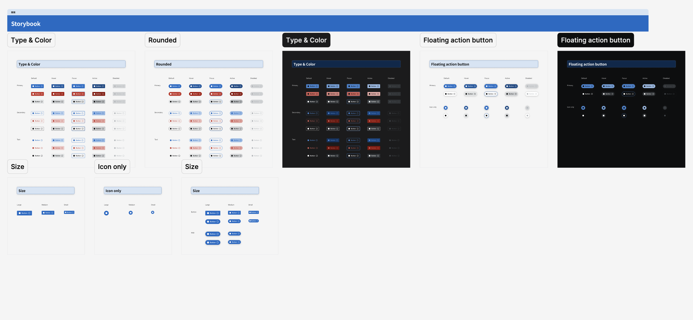
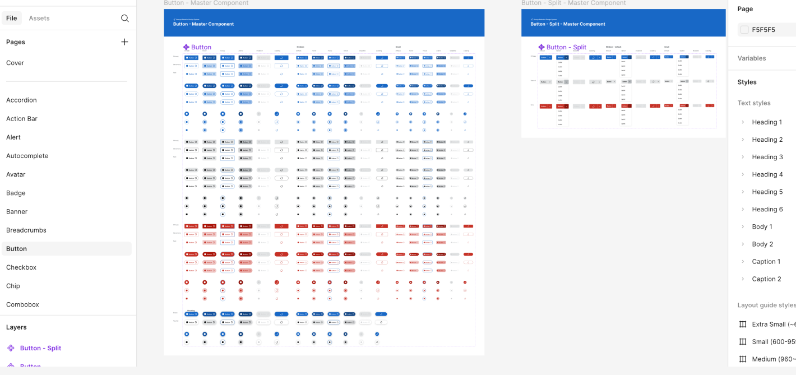
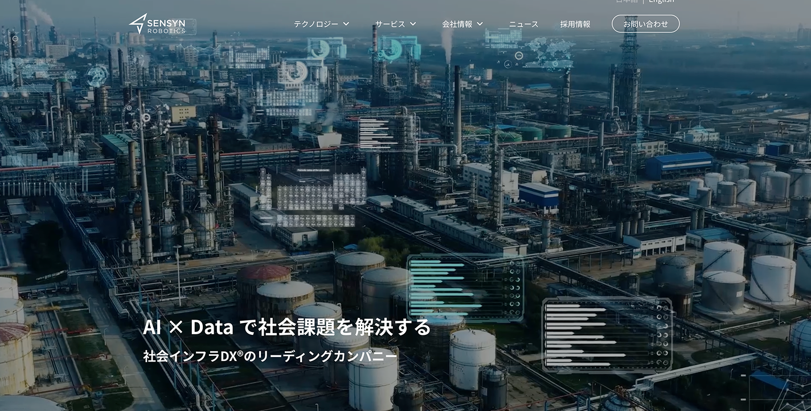

01Design system · SENSYN ROBOTICS
Connecting Figma patterns to production components
Helped create a shared UI language through research, reusable Figma components, Vuetify evaluation, and Storybook implementation.
Multidisciplinary designer · Web creator · Japanese-fluent
Hi, I’m Mya Thet Chel—a multidisciplinary designer and web creator with 7+ years of experience designing and building digital experiences, including seven years in Japan. My work spans UX, interface design, design systems, responsive front-end development, and website operations. By working across both design and code, I connect designers and engineers, turn visual decisions into practical components, and help bring ideas from concept to launch.
Based in the New York City area · Open to US opportunities
fly anywhere in this hero ✦
Where I can contribute
Select a role to see the experience I would bring to that team.
Strong fit for
I translate stakeholder requirements and complex operational needs into clear flows, wireframes, interfaces, and reusable patterns.
Evidence from my work
Selected proof
Three examples show how I move from product structure to reusable systems and shipped web experiences.

01Design system · SENSYN ROBOTICS
Helped create a shared UI language through research, reusable Figma components, Vuetify evaluation, and Storybook implementation.

02Product UI · B2B workflows
Turned planning requirements into structured flows, interface screens, and reusable components for design and engineering conversations.

03Web design · Front-end delivery
Designed, coded, published, and maintained responsive web experiences, including product pages and landing pages.
Career journey
My career grew step by step: data and visual work, responsive coding, web design, then product UI and design engineering.
SENSYN ROBOTICS · Japan
NEXTERA · Japan
ITAMIARTS · Japan
ITAMIARTS · Myanmar
デザインと実装をつなぐ。
I connect designers and engineers by understanding both design systems and front-end implementation. That helps me translate visual decisions into practical component guidance and keep teams aligned from Figma to production.